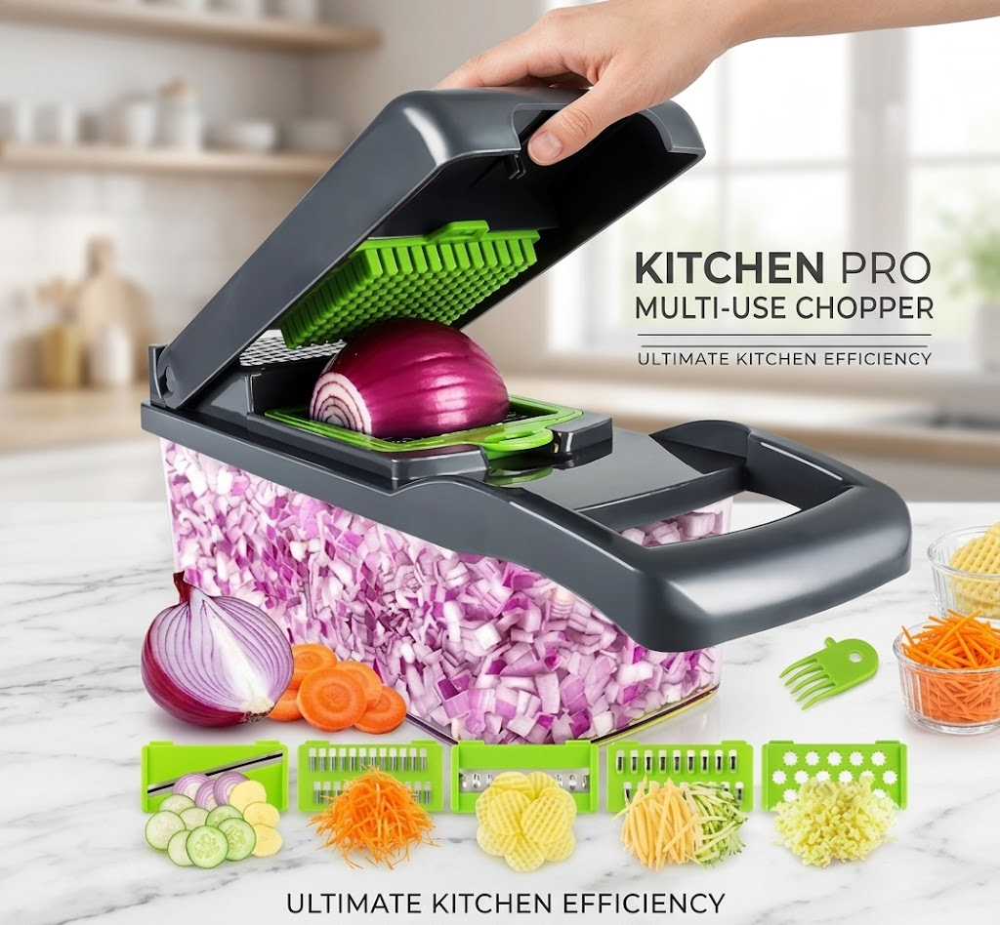

Electric mini food chopper
Small batches of herbs, garlic, nuts or pesto without hauling out the big processor.
See buying guide →
Prep made easy
A manual vegetable chopper turns a slow knife task into a quick press. It is one of the fastest ways to get dinner started on a busy weeknight, and it keeps onion vapors mostly contained so you can chop without crying.
As an Amazon Associate I earn from qualifying purchases.
Manual choppers are quieter, cheaper, dishwasher-safe and enough for most weeknight jobs. Electric choppers make sense if you cook in large batches or process a lot of tough ingredients.
Mostly yes. Enclosed choppers trap the sulfur compounds that make you cry, though very fresh onions can still sting.